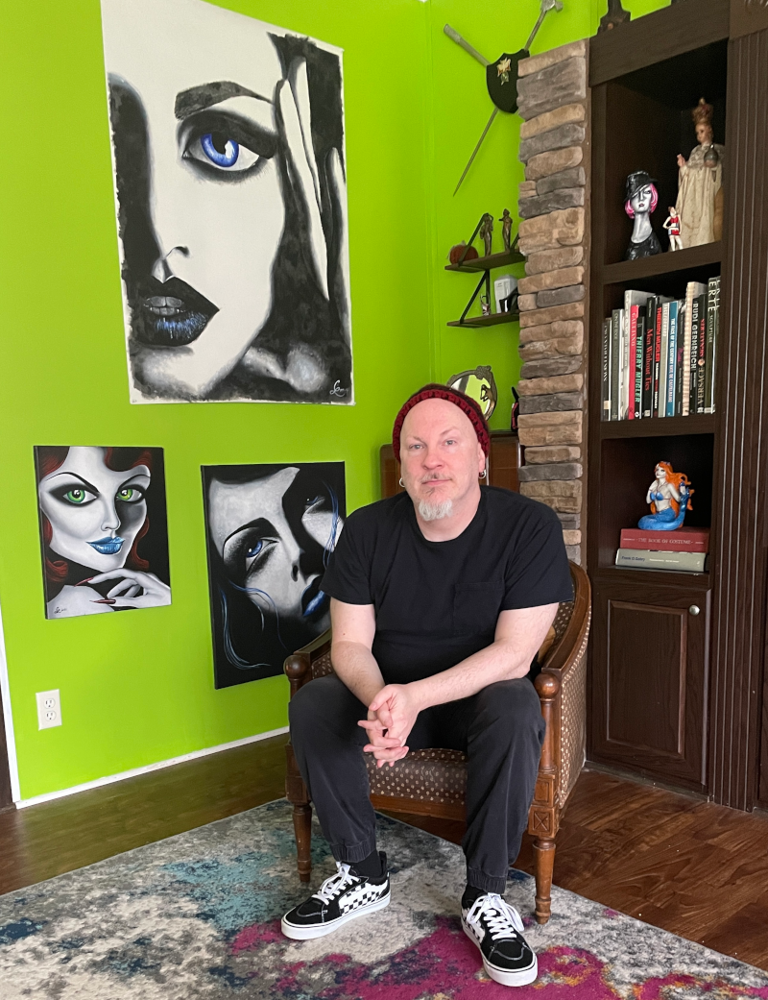

About Chris Oleary

Chris Oleary is a contemporary artist known for his vibrant and evocative paintings that explore themes of identity, emotion, and the human experience. With a background in fine arts, Chris has developed a unique style that combines bold colors and dynamic compositions to create visually striking works.
His work has been exhibited in numerous galleries and art shows, earning him recognition in the art community. Chris continues to push the boundaries of his craft, constantly experimenting with new techniques and mediums to express his artistic vision.